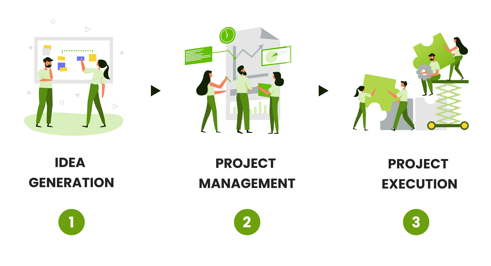
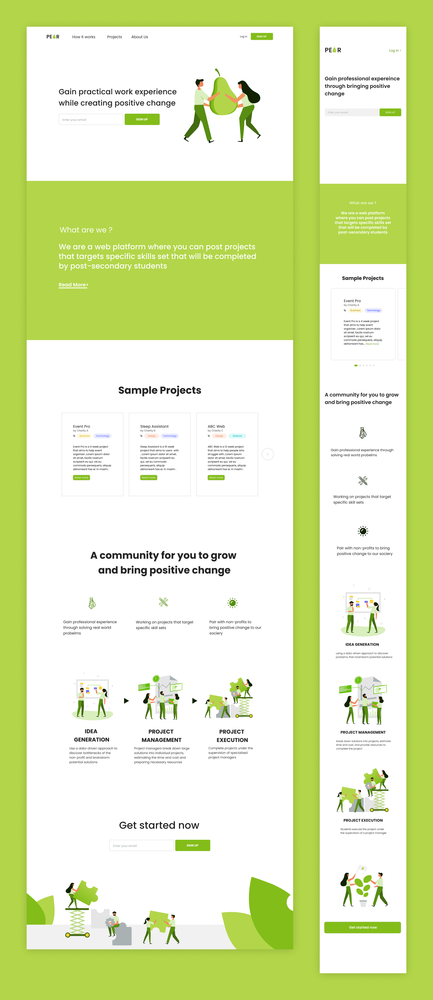
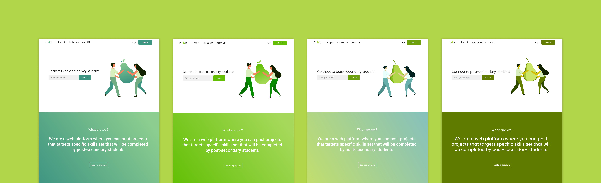
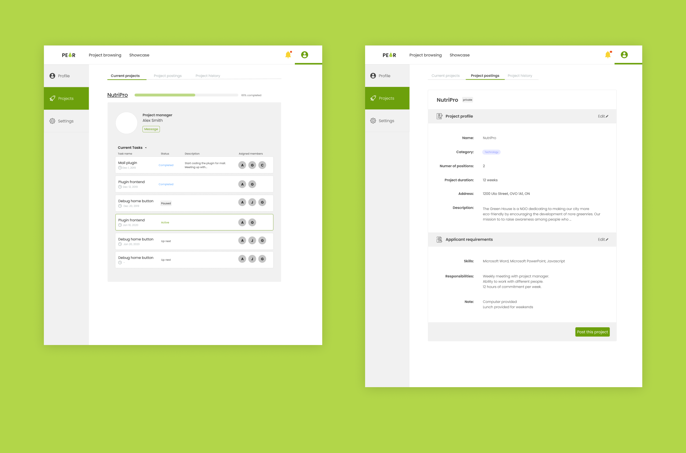

Startup PEAR
- Name
- PEAR
- Type
- Startup
- Tools
- Illustrator, Figma
- Timeline
- July 2019 - Present
- My Role
- Branding, UI/UX Design, Illustration
- Team
- Jacqueline Ji, Chloe Sham, Sophia Sun, Stephanie Chan
What problems are we trying to solve?
- 1. Non-profits have no access to talents due to the lack of sufficient funds and resources
- 2. Students that try to break into industries with no working experience
Why is it important?
- Being someone who is both the creator of this product and the targeted users, I understand the struggle students try to seek opportunities to learn and grow. Meanwhile finding a team with responsible people is already hard enough.
- After reaching out to non-profits, we learned that their main struggle is not having enough money to hire talents.
- We want to create a sustainable cycle between professional and social development by building a global community of non-profits and students
How does it work?
PEAR allows nonprofits to post projects that will be completed by technically skilled post-secondary students.

Problem we encountered
Initialy we wanted the platform to be job based.
One of the mockup interations we had:
After more research being done and talking to numerous non-profits we realized a lot of non-profits don't tend to know what kind of position to hire and what kind of solutions they need.
The 3 steps as a solution
- 1. Multidisciplinary student teams use a data-driven approach to discover bottlenecks of non-profits' and brainstorm potential solutions
- 2. Our in-house project managers break down large solutions into individual projects, estimating the time and cost as well as preparing necessary resources
- 3. Group of students execute projects under the supervision of a student project manager

- We aimed to make the platform more accessible by making sure there is a person that assists them through the whole process.
- A project manager is essential to make sure the deadlines are met and the team is communicating well with the non-profits.
To make the process more transparent, PEAR allows students, project managers as well as nonprofits to check the progress of each task.
Wireframes
- These two different versions of wireframes are slightly different from the traditional wireframes I created. As after working with the team, I figured most teammates preferred high fidelity wireframes as I received more feedbacks the more details I put in.
Previous versions (July)
version 1 (left)
- Version 1 was abandoned as I was given the feedback that it looked too dull. We wanted to create a website that is pleasant to use
version 2 (right)
- I then created version 2 where more graphics were added with more colours. This version was eventually abandoned as
- 1. we thought the style was not serious enough for the purpose of our website
- 2. the elements weren't consistent throughout the whole site
Changes I made
- 1. eliminate the number of colours used by creating a design system to keep all sections more coherent
- 2. redesign the characters to keep all graphic elements the same style
Mockup - Student landing page (Oct)
I created this mockup after joining Starterhacks design team where I learned a lot of new techniques that greatly influenced my design decisions.
Experiment sections
Colour Experiments
Transitioning from iteration 2 to the final version, some people on the team preferred the old colour scheme while others prefer the new one.
More mockups
What's next
PEAR is still a work in progress and we are working on implementing the website. There might be more changes to be made as we are still doing more research. Tell us if you have any feedback, we would really appreciate it!
Send a feedback